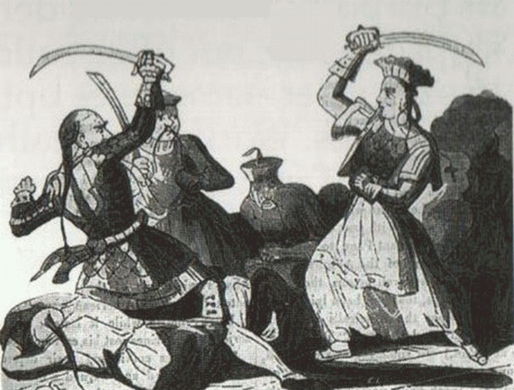

Art der Piraterie
Nach dem Abklingen des karibischen „Goldenen Zeitalters“ um 1730 blieb Seeraub im 19. und frühen 20. Jahrhundert regional und in wechselnden Rechtsformen bestehen. Entscheidend wurde die Unterscheidung zwischen Piraterie (privater, unlizenzierter Seeraub) und Kaperfahrt (staatlich beauftragte Beutefahrt im Krieg mittels Kaperbrief). Solange Staaten Kapitänen letters of marque ausstellten, bewegte sich Gewalt gegen feindliche Handelsschiffe im Rahmen des Seekriegsrechts. Erst die Pariser Seerechtsdeklaration vom 16. April 1856 erklärte unter den Unterzeichnerstaaten: „Privateering is, and remains, abolished.“ Damit endete die klassische europäische Kaperei als anerkannte Kriegsform weitgehend (die USA unterzeichneten die Erklärung zunächst nicht).
Parallel dazu existierten noch Formen staatlich geduldeter oder halbstaatlicher Beutefahrt: die Barbaresken-Korsaren Nordafrikas (Algier, Tunis, Tripolis), die bis 1830 Tribute und Lösegelder erpressten, sowie große Piratenkonföderationen an der südchinesischen Küste und Raubflotten im Malaiischen Archipel (u. a. Iranun/Lanun). In Lateinamerika und der Karibik verbanden sich Unabhängigkeitskriege mit Kaperfahrt und Grauzonen zwischen Patriotismus und Piraterie. Flussräuber am Mississippi und Restgruppen im Atlantik waren lokal bedeutsam, aber nicht mehr welthistorisch prägend.
Im 20. Jahrhundert traten dampfgetriebene Marinen, Telegrafie und internationales Seerecht an die Stelle der alten Kaperökonomie. U-Boot-Krieg und Handelskrieg der Weltkriege sind kein Piraterie-Phänomen: Sie waren staatliche Seekriegsführung (wenn auch völkerrechtlich umstritten), nicht private Gewalt „for private ends“ im Sinne späterer UNCLOS-Definitionen. Echte Piraterie blieb zwischen den Weltkriegen und bis in die Nachkriegszeit vergleichsweise selten, bis gegen Ende des Jahrhunderts neue Hotspots die „Moderne“ einleiteten.
Hauptcharaktere

- Zheng Yi Sao (Cheng I Sao / Ching Shih, gest. 1844) und Zhang Bao (Cheung Po Tsai): Führten nach dem Tod Zheng Yis (1807) die größte dokumentierte Piratenkonföderation der Südchinesischen See. Die Flotte umfasste nach zeitnahen und modernen Schätzungen hunderte Junks und zehntausende Mann; 1810 ergaben sich große Teile unter Amnestie der Qing-Behörden.
- Hussein Dey von Algier sowie die Korsarenmilieus der Regentschaften: letzte Phase des Barbaresken-Systems bis zur französischen Eroberung Algiers 1830.
- Stephen Decatur (USA) und Lord Exmouth (Großbritannien): Akteure der frühen Unterdrückung (Zweiter Barbareskenkrieg 1815; Bombardement Algiers 1816).
- James Brooke (Raja von Sarawak) und britische Marineoffiziere (u. a. Henry Keppel): führten ab den 1840er Jahren Kampagnen gegen als Piraten bezeichnete Gruppen an der Nordküste Borneos (u. a. Iban/„Sea Dayaks“, Iranun). Die Definition von „Piraterie“ war politisch umstritten.
- Baltimoreer und lateinamerikanische Kaperfahrer: Nach dem Britisch-Amerikanischen Krieg (1812–1815) und in den Unabhängigkeitskriegen Lateinamerikas operierten Kapitäne mit Aufträgen revolutionärer Regierungen (z. B. Buenos Aires, später Gran Kolumbien) gegen spanischen Handel.
- Dampfnavies und Kolonialverwaltungen (britisch, niederländisch, französisch, Qing, später USA): traten als systematische Piratenjäger auf. Einzelpersonen traten hinter Institutionen zurück.
- Gelegentliche Einzelfälle des späten 19. und frühen/mittleren 20. Jahrhunderts: oft kleine Banden, Fluss- oder Küstenräuber, keine Flottenherrscher mehr im Stil des 17. Jahrhunderts.
Was geschah
Atlantik und Karibik. Die klassische karibische Piraterie war nach etwa 1730 weitgehend zurückgedrängt. Kaperei lebte in den Napoleonischen Kriegen und im Krieg von 1812 erneut auf: Private bewaffnete Schiffe jagten feindliche Prisen und brachten sie vor Prisengerichte. Mit dem Frieden von Gent (1815) entfiel für viele US-Kapitäne das legale Kriegsgeschäft. Ein Teil wandte sich den lateinamerikanischen Unabhängigkeitskriegen zu und nahm Kaperaufträge von Revolutionären an. Neutralitätsgesetze der USA und wachsende Kontrolle der Karibik erschwerten diese Praxis in den 1820er Jahren. Die Pariser Deklaration 1856 zog unter den Großmächten einen völkerrechtlichen Schlussstrich unter die Kaperei. Vereinzelte Reste und Kriminalfälle blieben, bildeten aber keine Epoche mehr.
Barbaresken. Nach den Napoleonischen Kriegen duldeten die europäischen Mächte den Corso im Mittelmeer kaum noch. Die USA erzwangen 1815 (Zweiter Barbareskenkrieg) Verträge ohne Tribut; 1816 zerstörte ein britisch-niederländisches Geschwader unter Exmouth große Teile der algerischen Flotte und erzwang die Freilassung christlicher Sklaven. Dennoch überlebte das Regime bis 1830. Die französische Landung bei Sidi Ferruch (14. Juni) und die Einnahme Algiers (5. Juli 1830) beseitigten die Regentschaft als institutionelle Basis der Korsaren. Damit endete die jahrhundertelange Form staatlich gerahmter nordafrikanischer Beutefahrt.
Südchinesische See. Um 1805–1810 beherrschte die Konföderation unter Zheng Yi Sao große Teile der kantonesischen Küste und des Perlflussdeltas. Sie erhob Schutzgelder, plünderte Handel und besiegte wiederholt Qing-Geschwader. Innere Konflikte (u. a. zwischen Roten und Schwarzen Flaggen) und Druck durch Qing-, portugiesische und britische Kräfte führten 1810 zur Amnestie: Zehntausende ergaben sich, Anführer erhielten Begnadigungen und teilweise Dienstgrade. Nach 1840 unterstützte die britische Präsenz in Hongkong die weitere Unterdrückung. Einzelne Piraten (z. B. Shap-ng-Tsai, Chui Apoo) blieben bis in die Mitte des Jahrhunderts aktiv, ohne die frühere Konföderationsmacht zu erreichen.
Malaiischer Archipel. Iranun (in malaiischen Quellen oft lanun) und verwandte Gruppen unternahmen seit dem späten 18. Jahrhundert weiträumige Raubzüge von Mindanao und Sulu bis in die Straße von Malakka und nach Sumatra. Sklavenraub und Plünderung von Küstenhandel waren zentral. Briten und Niederländer intensivierten ab den 1820er/1840er Jahren Patrouillen und Strafexpeditionen. James Brookes Kampagnen in Sarawak (u. a. Batang Marau 1849) waren militärisch wirksam, in London aber wegen hoher Opferzahlen und fragwürdiger Piratenetikettierung umstritten. Bis zum späten 19. Jahrhundert schwächte kolonialer Seezwang die großen Raid-Systeme deutlich.
Flüsse und Randzonen. Am Mississippi und Ohio hatten im späten 18. und frühen 19. Jahrhundert Banden (u. a. um Samuel Mason, später Mythen um John Murrell) Flatboats überfallen. Dampfschiffe, dichtere Besiedlung und stärkere Polizeigewalt reduzierten diese Gefahr bis etwa zur Mitte des 19. Jahrhunderts erheblich. Ähnlich wirkten Dampfkriegsschiffe weltweit: Sie waren schneller, wetterunabhängiger und schwerer von traditionellen Galeeren- oder Junkflotten zu stellen.
Spätes 19. und 20. Jahrhundert. Mit Telegraf, Kohle-/Ölstützpunkten und internationalen Abkommen wurde organisierte Hochseepiraterie selten. Was blieb, waren regionale Küstenüberfälle und kriminelle Einzelfälle. In den Weltkriegen war der Angriff auf Handelsschiffe Teil staatlicher Seekriegsführung (U-Boote, Hilfskreuzer). Das ist rechtlich und historisch von Piraterie zu trennen: Es fehlte das Merkmal privater, unlizenzierter Gewalt. In der Zwischenkriegszeit und bis in die Nachkriegsjahrzehnte blieb echte Piraterie dünn gestreut. Erst ab den 1970er/1980er Jahren und verstärkt seit den 1990ern stiegen gemeldete Vorfälle wieder an und leiteten in die moderne Phase über.
Wie begann es
Diese Epoche setzt dort an, wo das Goldene Zeitalter der Karibik bereits gebrochen war: koloniale Marinen, Amnestien und Hafenkontrollen hatten die großen atlantischen Piratenflotten zerschlagen. Was folgte, war kein Neustart derselben Kultur, sondern ein Nachspiel und eine Verlagerung. Kaperei blieb in großen Kriegen (Revolution, Napoleon, 1812) legal und lukrativ. Gleichzeitig blühten außerhalb europäischer Kerngewässer eigenständige Systeme: Barbaresken-Corso, chinesische Konföderationen, malaiische Raid-Netzwerke. Der Beginn des „langen 19. Jahrhunderts“ der Pirateriegeschichte ist daher weniger ein Datum als ein Übergang: von karibischer Hochpiraterie zu regionalen Hotspots und zum langsamen Abbau staatlich geduldeter Beutefahrt.
Wie endete es / Übergang
Mehrere Kräfte wirkten zusammen. Militärttechnisch setzten Dampfschiffe, moderne Artillerie und globale Marinestützpunkte den alten Segel- und Galeerenpiraten klare Grenzen. Politisch zerstörte die Eroberung Algiers 1830 das Barbaresken-System; völkerrechtlich ächtete Paris 1856 die Kaperei unter den Großmächten. Koloniale Durchdringung Südostasiens und Qing-/britische Kooperation in chinesischen Gewässern brachen die großen Konföderationen. Was übrig blieb, war fragmentierte Kriminalität, keine Flottenherrschaft mehr.
Im 20. Jahrhundert festigte internationales Seerecht den Unterschied zwischen Seekrieg und Piraterie. Die Weltkriege erweiterten staatliche Handelskriegsführung, ohne klassische Piraterie wiederzubeleben. Nach 1945 blieb Seeraub jahrzehntelang ein Randphänomen, bis schwache Küstenstaaten, globalisierte Schifffahrt und lukrative Lösegeldmodelle ab den späten Jahrzehnten des Jahrhunderts neue Brennpunkte schufen (Horn von Afrika, Golf von Guinea, Südostasien). Damit endet diese Epoche nicht in einem absoluten Nullpunkt, sondern im Übergang zur modernen Piraterie.
Quellen
- ICRC / IHL Databases – Paris Declaration Respecting Maritime Law, 16 April 1856: https://ihl-databases.icrc.org/en/ihl-treaties/paris-decl-1856/declaration
- ETH Zurich / Files – Volltext der Pariser Seerechtsdeklaration 1856 (PDF): https://www.files.ethz.ch/isn/125383/1284_Paris_Maritime.pdf
- Encyclopaedia Britannica – Barbary pirate: https://www.britannica.com/topic/Barbary-pirate
- Wikipedia – Invasion of Algiers (1830): https://en.wikipedia.org/wiki/Invasion_of_Algiers_(1830
- Wikipedia – French conquest of Algeria (Abschnitt zu Korsaren und Ende der Piraterie): https://en.wikipedia.org/wiki/French_conquest_of_Algeria
- Wikipedia – Second Barbary War: https://en.wikipedia.org/wiki/Second_Barbary_War
- Wikipedia – Bombardment of Algiers (1816): https://en.wikipedia.org/wiki/Bombardment_of_Algiers_(1816
- World History Encyclopedia – Mark Cartwright, „Zheng Yi Sao“ (2021): https://www.worldhistory.org/Zheng_Yi_Sao/
- Oxford Global Capitalism – Case study „Ching Shih and the Pirates of the South China Coast“ (PDF): https://globalcapitalism.history.ox.ac.uk/files/case20-chinesepiratespdf
- Dian H. Murray – Pirates of the South China Coast, 1790–1810 (Stanford University Press, 1987) [Standardwerk; über Atlas Obscura / Sekundärliteratur zitiert]
- Cambridge University Press – Stefan Eklöf Amirell, Pirates of Empire (Kapitel Straße von Malakka / Iranun): https://www.cambridge.org/core/books/pirates-of-empire/strait-of-malacca/9343B768D2FB6AA9FB3CE8A5BA9B6778
- Northern Mariner – David Head / verwandte Arbeiten zu Baltimoreer Kaperfahrern in den lateinamerikanischen Unabhängigkeitskriegen: https://www.cnrs-scrn.org/northern_mariner/vol18/tnm_18_3-4_93-104.pdf
- U.S. National Park Service – Privateers Make Their Mark (War of 1812): https://www.nps.gov/stsp/learn/historyculture/privateers-make-their-mark.htm
- The Canadian Encyclopedia – Privateering During the War of 1812: https://thecanadianencyclopedia.ca/en/article/privateering-during-the-war-of-1812
- Wikipedia – River pirate / Mississippi-Kontext (Colonel Plug, Mason, Murrell): https://en.wikipedia.org/wiki/River_pirate
- Emerging Civil War – Blockade, Privateering, and the 1856 Declaration of Paris (2022): https://emergingcivilwar.com/2022/05/06/blockade-privateering-and-the-1856-declaration-of-paris/
- International Journal of Naval History – „Taking the Moral High Ground“ (USA und Pariser Deklaration): https://ijnh.seahistory.org/taking-the-moral-high-ground-the-united-states-privateering-and-immunity-of-private-property-at-sea/